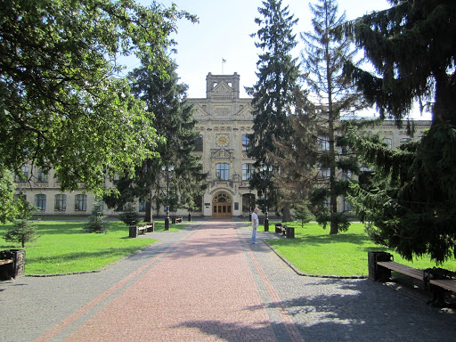

Структура самого фізтеху наступна: бакалаврат (або ще їх називають навчальними напрямками) -> спеціальність -> спеціалізація.  Назви перших двох класів (бакалаврату і спеціальності) затверджуються в міносвіти, спеціалізація — це те, що вже може бути додано на рівні навчального закладу, при бажанні, для уточнення особливості напрямку.
ФТІ має чотири напрямки:
- Безпека інформаційно-комунікаційних систем (групи ФБ)
- Прикладна математика (групи ФІ)
- Прикладна фізика (групи ФФ)
- Системи технічного захисту інформації(групи ФЕ)
В бакалавраті Прикладна фізика виділяють спеціальність Прикладна фізика, яка розділяється на дві спеціалізації: Фізика живих систем та Високі фізичні технології.